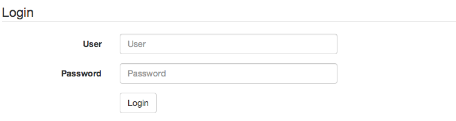

Spring Security
Spring Security
La sécurité pour une application se divise en 2 phases :
- Authentification : identification de l'utilisateur
- Autorisation : vérification des permissions
Durant l'authentification, on prend les données fournies par l'utilisateur (login/pass, token...) et on tente de charger un profil à partir d'un domaine (realm).
Spring security est un framework qui permet :
- D'aller vite pour mettre en place une mécanique d'authentification
- De pouvoir définir simplement une politique d'autorisation
- De pouvoir se connecter à presque tous les systèmes de gestion d'utilisateurs
- D'être sûr d'adhérer aux standards jee
Pour autant, à l'image de la sécurité, ce n'est pas toujours simple à manipuler.
Spring security se configure via un contexte spring, mais de dépend pas de spring mvc.
Nomenclature
- Realm : un système content des utilisateurs
- Principal : entité réprésentant l'utilisateur et qui est créée lors du processus d'authentification
- Authority : un rôle donné à un Principal
La façon la plus simple de contrôler les accès est d'utiliser les authorities (roles).
Branche git
On crée la branche security à partir de la branche master.
$ git checkout master Switched to branch 'master' $ git checkout -b security Switched to a new branch 'security'
Dépendances
Les dépendances :
<dependency>
<groupId>org.springframework.security</groupId>
<artifactId>spring-security-core</artifactId>
<version>3.1.6.RELEASE</version>
<scope>compile</scope>
</dependency>
<dependency>
<groupId>org.springframework.security</groupId>
<artifactId>spring-security-config</artifactId>
<version>3.1.6.RELEASE</version>
<scope>compile</scope>
</dependency>
<dependency>
<groupId>org.springframework.security</groupId>
<artifactId>spring-security-web</artifactId>
<version>3.1.6.RELEASE</version>
<scope>compile</scope>
</dependency>
La configuration
La configuration se fait via un contexte spring que l'on ajoute dans le web.xml.
<!-- Chargement des contextes spring -->
<listener>
<listener-class>org.springframework.web.context.ContextLoaderListener</listener-class>
</listener>
<context-param>
<param-name>contextConfigLocation</param-name>
<param-value>/WEB-INF/spring-context.xml,/WEB-INF/spring-security.xml</param-value>
</context-param>
Afin de sécuriser l'application, un filtre intercepte toutes les requêtes.
<!-- Filtre Spring Security -->
<filter>
<filter-name>springSecurityFilterChain</filter-name>
<filter-class>org.springframework.web.filter.DelegatingFilterProxy</filter-class>
</filter>
<filter-mapping>
<filter-name>springSecurityFilterChain</filter-name>
<url-pattern>/*</url-pattern>
</filter-mapping>
La configuration spring-security.xml :
<beans:beans xmlns="http://www.springframework.org/schema/security"
xmlns:beans="http://www.springframework.org/schema/beans"
xmlns:xsi="http://www.w3.org/2001/XMLSchema-instance"
xsi:schemaLocation="http://www.springframework.org/schema/beans
http://www.springframework.org/schema/beans/spring-beans-3.0.xsd
http://www.springframework.org/schema/security
http://www.springframework.org/schema/security/spring-security-3.1.xsd">
<http>
<intercept-url pattern="/**" access="ROLE_USER" />
<form-login />
<logout />
</http>
<authentication-manager>
<authentication-provider>
<user-service>
<user name="test" password="user" authorities="ROLE_USER" />
</user-service>
</authentication-provider>
</authentication-manager>
</beans:beans>
Cette configuration impose que l'utilsateur est authentifié et a le ROLE_USER.
Pour nos tests, on configure un authentication manager avec un utiliseur en dur.
Si on accède à n'importe quelle page du site, on a donc le formulaire :
Les fichiers statiques
Les images, css et js ne doivent pas être sécurisé : nous allons en avoir besoin sans être connecté.
Pour y accéder sans login, il suffit d'écrire quelques règles http supplémentaire, placées avant la règle portant sur le pattern="/**".
<http pattern="/css/**" security="none"/> <http pattern="/fonts/**" security="none"/> <http pattern="/js/**" security="none"/> <http pattern="/favicon.ico" security="none"/>
On peut donc maintenant récupérer ces ressources sans être connecté.
Logout
Un fois connecté, il faudrait pouvoir faire l'opération inverse.
L'url par défaut pour se déconnecter est /j_spring_security_logout, ce qui est assez vilain.
On change donc cette url :
<http>
<intercept-url pattern="/**" access="ROLE_USER" />
<form-login />
<logout logout-url="/logout" />
</http>
On peut donc ajouter ce bloc a notre colonne de droite :
<div class="panel panel-default">
<div class="panel-heading">Test user</div>
<div class="panel-body">
<a href="/logout">Logout <i class="icon-off"></i></a>
</div>
</div>
Il est maintenant possible de se connecter / déconnecter simplement.
Le formulaire
Il reste que le formulaire de login est moche.
Si on regarde le source de ce formulaire généré :
<html><head><title>Login Page</title></head><body onload='document.f.j_username.focus();'>
<h3>Login with Username and Password</h3><form name='f' action='/j_spring_security_check' method='POST'>
<table>
<tr><td>User:</td><td><input type='text' name='j_username' value=''></td></tr>
<tr><td>Password:</td><td><input type='password' name='j_password'/></td></tr>
<tr><td colspan='2'><input name="submit" type="submit" value="Login"/></td></tr>
</table>
</form></body></html>
Il est donc possible de faire la même chose avec notre propre html :
- Il faut faire un POST sur /j_spring_security_check
- Les paramètres importants sont j_username et j_password
Créez le fichier /WEB-INF/jsp/login.jsp à partir du fragment html suivant :
<form class="form-horizontal" role="form">
<div class="form-group">
<label for="user" class="col-lg-2 col-md-2 col-sm-2 col-xs-3 control-label">User</label>
<div class="col-lg-4 col-md-4 col-sm-4 col-xs-6">
<input type="text" class="form-control" id="user" placeholder="User">
</div>
</div>
<div class="form-group">
<label for="password" class="col-lg-2 col-md-2 col-sm-2 col-xs-3 control-label">Password</label>
<div class="col-lg-4 col-md-4 col-sm-4 col-xs-6">
<input type="password" class="form-control" id="password" placeholder="Password">
</div>
</div>
<div class="form-group">
<div class="col-lg-offset-2 col-md-offset-2 col-sm-offset-2 col-lg-10 col-xs-4">
<button type="submit" class="btn btn-default">Login</button>
</div>
</div>
</form>
Avec un mapping correspondant.
@RequestMapping("/login")
public String login() {
return "login";
}
Il reste donc la configuration à changer :
<http pattern="/login" security="none"/> <http> <intercept-url pattern="/**" access="ROLE_USER" /> <form-login login-page="/login" /> <logout logout-url="/logout" /> </http>
Ce qui donne un formulaire un peu plus au goût de notre site.
Custom tags
Nous voulons afficher le vrai nom de l'utilisateur loggué à la place de "Test user"
Spring security propose une librairie de tags qui va permettre de faire cela simplement.
<dependency>
<groupId>org.springframework.security</groupId>
<artifactId>spring-security-taglibs</artifactId>
<version>3.1.4.RELEASE</version>
<scope>compile</scope>
</dependency>
Et dans la jsp
<%@ taglib prefix="sec" uri="http://www.springframework.org/security/tags" %>
<div class="panel panel-default">
<div class="panel-heading">Utilisateur : <sec:authentication property="principal.username" /></div>
<div class="panel-body">
<a href="/logout">Logout <i class="icon-off"></i></a>
</div>
</div>
Sécuriser l'édition
Utilisez spring security pour :
- Afficher le lien logout que si la personne est logguée
- Afficher un lien login si la personne est n'est pas logguée
- Sécuriser uniquement la partie liée à l'édition
Pour utiliser des règles simples dans la jsp :
<sec:authorize access="hasRole('ROLE_USER')">...</sec:authorize>
Il faut activer les expressions dans la configuration
<http use-expressions="true"> <intercept-url pattern="/**" access="hasRole('ROLE_USER')" /> <form-login login-page="/login" /> <logout logout-url="/logout" /> </http>
Vers la base de données
Spring security est extrêmement flexible afin de s'adapter à toutes les situations.
Il y a beaucoup d'implémentations fournies pour beaucoup de système : jdbc, ldap, radius, kerberos, oauth...
Coder sa propre extension est possible mais il faut savoir à quel niveau injecter son code.
Nous allons exploiter la persistance jdbc afin d'aller chercher les utilisateurs en base.
Afin d'aller chercher nos utilisateurs en base, il suffit d'écrire.
<authentication-manager>
<authentication-provider>
<jdbc-user-service data-source-ref="dataSource" />
</authentication-provider>
</authentication-manager>
On utilise ici la même dataSource que pour le reste de l'application.
En l'état, la base étant vide, on ne peut plus se connecter.
jdbc-user-service utilise la classe JdbcDaoImpl.
Le schema associé est le suivant :
users
- username
- password
- enabled
authorities
- username
- authority
Il suffit donc de créer ces tables et de rajouter un utilisateur.
@PostConstruct
public void initUsers() throws SQLException {
try (Connection connection = dataSource.getConnection()) {
if (!tableExists("users")) {
createUsersTable();
}
if (!tableExists("authorities")) {
createAuthoritiesTable();
}
connection.prepareStatement("delete from authorities").execute();
connection.prepareStatement("delete from users").execute();
connection.prepareStatement(
"insert into users (username, password, enabled) values ('test', 'user', true)").execute();
connection.prepareStatement(
"insert into authorities (username, authority) values ('test', 'ROLE_USER')").execute();
}
}
private void createUsersTable() throws SQLException {
try (Connection connection = dataSource.getConnection()) {
connection.prepareStatement(
"create table users (username varchar(50), password varchar(50), enabled boolean)").execute();
}
}
private void createAuthoritiesTable() throws SQLException {
try (Connection connection = dataSource.getConnection()) {
connection.prepareStatement("create table authorities (username varchar(50), authority varchar(50))").execute();
}
}
private boolean tableExists(String name) throws SQLException {
try (Connection connection = dataSource.getConnection()) {
DatabaseMetaData dbmd = connection.getMetaData();
ResultSet rs = dbmd.getTables(null, "APP", name.toUpperCase(), null);
return rs.next();
}
}
Cela fonctionne même si le code mis en place est loin d'être satisfaisant. Ce code ne pourrait bien sûr pas aller en production.
Faire du sql à la main en java n'est jamais très élégant.